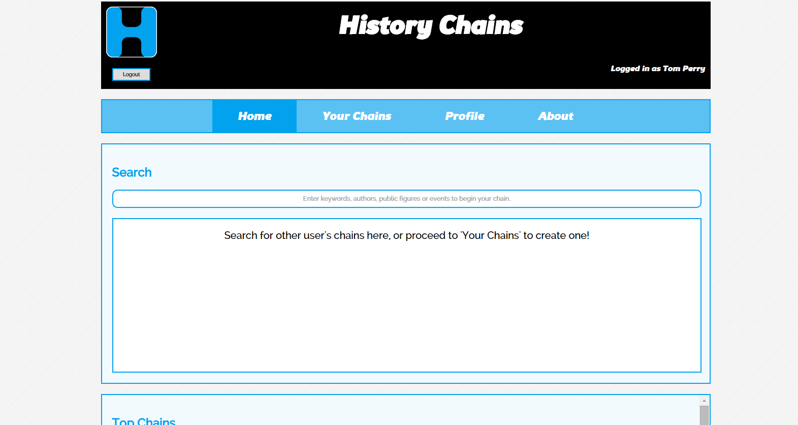
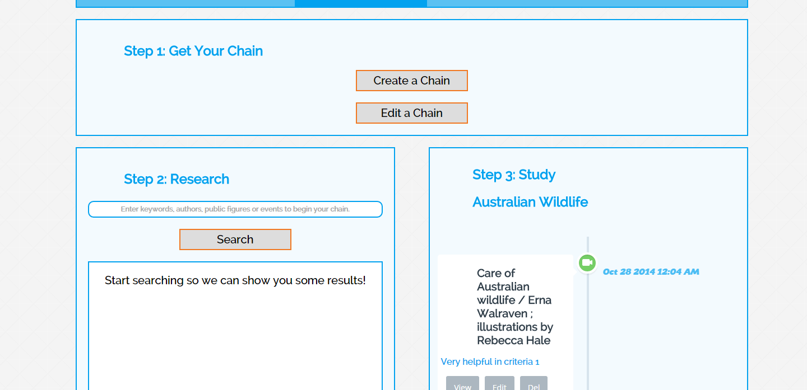
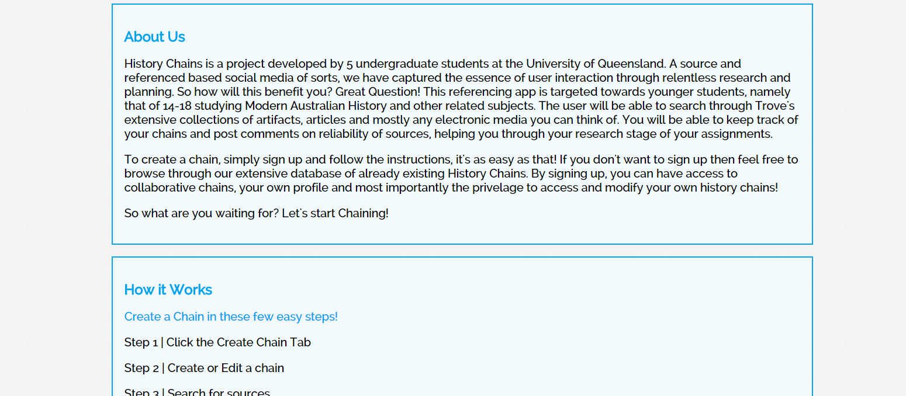
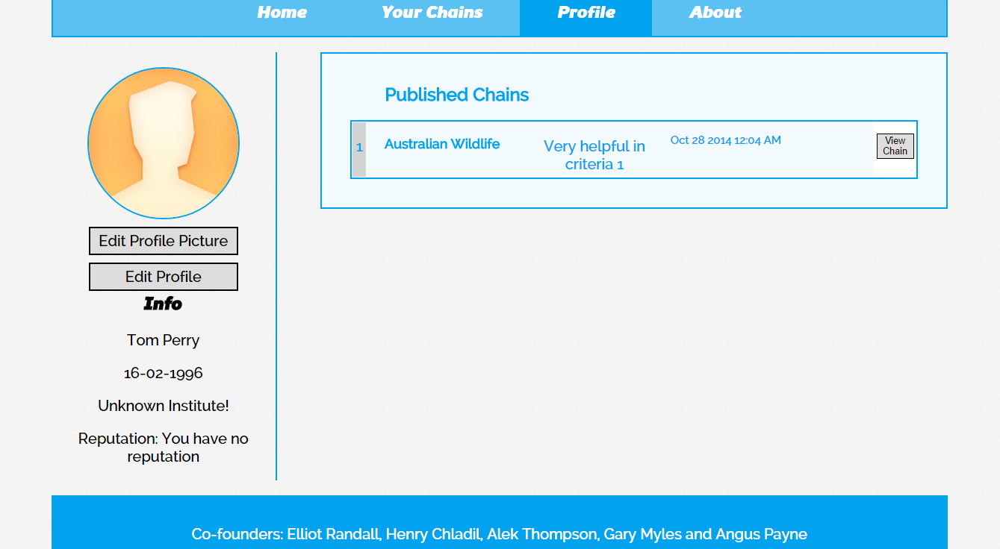

Who
What
History Chains was made by a team of 5 undergraduate students at the University of Queensland. As an ambitious project, the team worked together to create an application that sourced information from Trove. This was assesment for DECO1800
 Most children these days are consumed by technology and falter when given errands of an on-going research task and collaboration in the classroom. Using a combination of technology and education, we have deliberated a concept which creates a medium between the user and the application that allows them to form a working 'Study Chain' that controls, shapes, and technologically inscribes their work in a technological form. Our concepts name is 'History Chains'. A versatile, educational and instructive application that uses Trove's Search Portal as a medium for data retrieval. The overall idea behind 'History Chains' is to encourage Children in primary school to emerge themselves in historical sources in Trove. We are closely working with articles related to Modern Australian History, a major subject in primary school with sources scattered all over Trove. Allowing the Children to manipulate this data, 'History Chains' will prove to be a pivotal study instrument in classroom collaboration and student research.
 